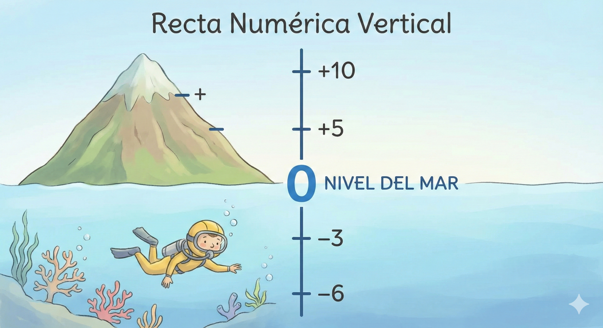
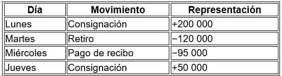
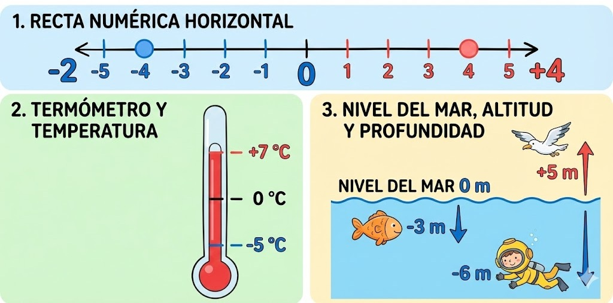
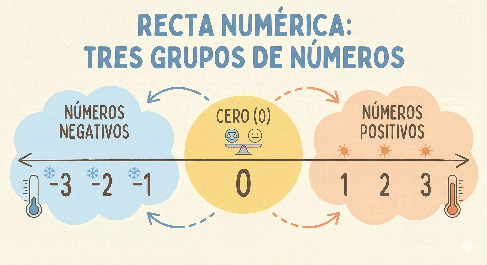
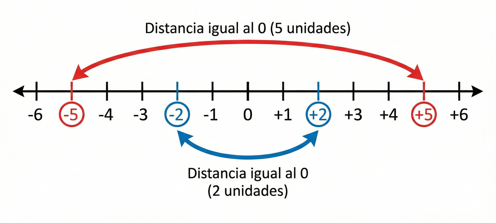
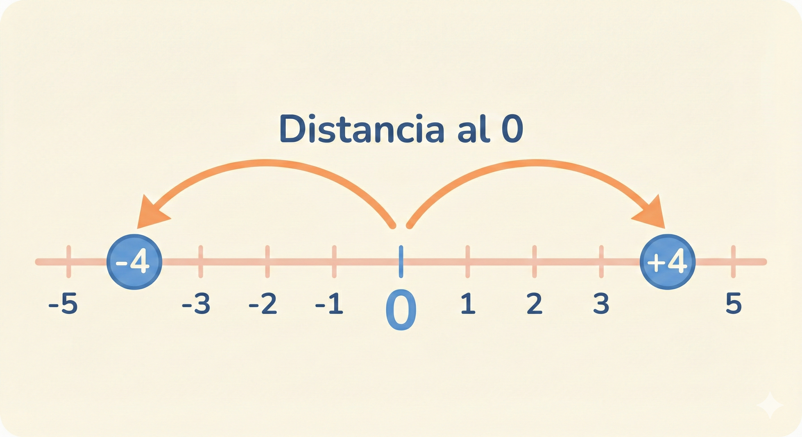
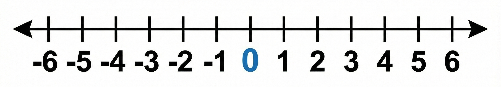

7°
EXPLORACIÓN
Lee con atención cada situación y responde sin usar calculadora. No importa si no estás seguro, aquí pensar es más importante que acertar.
Situación 1: Dinero 💰
Juan tenía en su cuenta $50.000.
Durante el día:
- Pagó $80.000 en un celular.
- Luego le consignaron $30.000.
¿Crees que Juan quedó con dinero a favor o con deuda?
¿Cómo podrías representar esa situación con números?
Situación 2: Temperatura 🌡️
En una ciudad, la temperatura en la madrugada fue de –3 °C.
Al mediodía subió 8 grados.
¿La temperatura quedó por encima o por debajo de 0 °C?
¿Qué significa para ti el signo “–” en la temperatura?
Situación 3: Altura y profundidad 🌊⛰️
Un buzo se encuentra a 5 metros bajo el nivel del mar.
Un dron vuela a 12 metros sobre el nivel del mar.
¿Quién está más lejos del nivel del mar?
¿Cómo representarías cada posición con un número?
Piensa y escribe
En tu cuaderno:
- ¿En cuáles de las situaciones aparecen números menores que cero?
- ¿Para qué crees que sirven esos números en la vida diaria?
- Escribe dos ejemplos de tu vida cotidiana donde creas que se puedan usar números con signo “+” o “–”.

¿Por qué crees que en matemáticas necesitamos números diferentes a los que ya conocíamos (0, 1, 2, 3…)?
ANALIZA
¿Qué vas a hacer en este momento?
Vas a analizar situaciones reales donde es necesario usar números mayores y menores que cero, para comprender qué representan y por qué se usan.
Situación 1: Dinero y deudas 💳
Camilo revisa su cuenta bancaria durante la semana:
- Lunes: le consignan $200.000
- Martes: retira $120.000
- Miércoles: paga un recibo por $95.000
- Jueves: le consignan $50.000
Para representar estas situaciones:
- Los ingresos se pueden escribir con signo +
- Los gastos o retiros se pueden escribir con signo −

Piensa:
- ¿Qué significado tiene el signo que acompaña a cada número?
- ¿Todos los números representan lo mismo?
Situación 2: Temperatura 🌡️
En un municipio, durante un mismo día se registraron estas temperaturas:
- Madrugada: –4 °C
- Mañana: 3 °C
- Tarde: 8 °C
El número 0 °C se toma como un punto de referencia.
Los valores:
- Menores que 0 indican temperaturas bajo cero
- Mayores que 0 indican temperaturas sobre cero
Reflexiona:
- ¿Qué diferencia hay entre −4 °C y 4 °C?
- ¿Cuál temperatura está más lejos del 0?
Situación 3: Ubicación respecto a un punto de referencia 🌊
Observa nuevamente la imagen trabajada antes (nivel del mar).
- Un buzo está a −6 m
- Un pez está a −3 m
- Una gaviota vuela a +5 m
Analiza:
- ¿Quién está más cerca del nivel del mar?
- ¿Quién está más lejos del punto de referencia?
- ¿Qué indica el signo del número en cada caso?
Para pensar y responder
Responde con tus propias palabras:
- ¿Por qué crees que el 0 es tan importante en estas situaciones?
- ¿En qué casos se usan números con signo negativo?
- ¿Qué tienen en común el dinero, la temperatura y la altura respecto al nivel del mar?
Observa la siguiente imagen.
En ella se muestran diferentes situaciones de la vida diaria que usan un mismo punto de referencia: el 0.
Analiza cómo cambia el significado del número según el contexto.

CONOCE ALGO NUEVO
¿Qué son los números enteros?

Los números enteros son números que nos permiten representar cantidades y posiciones mayores que cero, menores que cero y el cero.
Incluyen:
- Números positivos: 1, 2, 3, 4, …
- El cero (0), que es un punto de referencia
- Números negativos: −1, −2, −3, −4, …
A este conjunto de números se le llama conjunto de los números enteros y se representa con la letra: ℤ
El cero como punto de referencia
El 0 no indica ganancia ni pérdida. Tampoco indica arriba ni abajo.
El 0 sirve como punto de referencia para comparar posiciones y cantidades.
Ejemplos:
- Temperaturas sobre 0 °C → números positivos
- Temperaturas bajo 0 °C → números negativos
- Nivel del mar → referencia para alturas y profundidades
- Cuenta bancaria → referencia entre dinero a favor o deuda
Los números enteros en la recta numérica
Los números enteros se pueden ubicar en una recta numérica:
- El 0 se ubica en el centro
- A la derecha del 0 están los números positivos
- A la izquierda del 0 están los números negativos
- Cada número está separado del siguiente por la misma distancia
Mientras más lejos esté un número del 0, mayor es su distancia, aunque no siempre sea mayor en valor.
El opuesto de un número entero
Todo número entero tiene un opuesto.
- El opuesto de +5 es −5
- El opuesto de −3 es +3
- El opuesto de 0 es 0
Dos números opuestos están a la misma distancia del 0, pero en lados contrarios de la recta numérica.

Valor absoluto (idea básica)
El valor absoluto de un número entero indica qué tan lejos está del 0, sin importar el signo.
Ejemplos:
- El valor absoluto de −6 es 6
- El valor absoluto de +4 es 4
El valor absoluto siempre es un número positivo o cero.

ACTIVIDADES DE APRENDIZAJE
Actividad 1: Del contexto al número
Propósito: Dar sentido al signo (+ / −)
Lee cada situación y escribe el número entero que la representa.
a) La temperatura está 3 grados bajo cero.
b) Un submarino se encuentra a 8 metros bajo el nivel del mar.
c) Un ave vuela a 6 metros sobre el nivel del mar.
d) Una persona tiene una deuda de $25.000.
e) En una cuenta bancaria hay $40.000 a favor.
Escribe el número completo, incluyendo el signo.

Actividad 2: Ubicando números en la recta numérica
Propósito: Relacionar número, signo y posición
Observa la recta numérica y responde.
Números a ubicar: −5, +3, 0, −2, +4

- ¿Cuál número queda más a la derecha?
- ¿Cuál número queda más a la izquierda?
- ¿Qué número está más cerca del 0?
Actividad 3: Números opuestos
Propósito: Comprender la idea de opuesto sin fórmulas
Escribe el opuesto de cada número:
a) +7
b) −4
c) −10
d) +1
e) 0
Luego responde:
- ¿Qué tienen en común cada número y su opuesto?
Actividad 4: ¿Cuál es mayor?
Propósito: Comparar números enteros
Escribe el signo >, < o = según corresponda:
a) −3 ___ 2
b) −6 ___ −1
c) 0 ___ −4
d) 5 ___ −5
Explica una de tus respuestas con palabras.
Los números enteros nos permiten representar situaciones donde no solo importa la cantidad, sino también la posición o el sentido respecto a un punto de referencia.
Números enteros en mi entorno
Piensa en situaciones de tu vida diaria donde se usen números mayores que cero, menores que cero o el cero como referencia.
Actividad
Describe dos situaciones reales diferentes a las vistas en clase y responde:
1️⃣ ¿Qué situación es?
2️⃣ ¿Cuál sería el número entero que la representa?
3️⃣ ¿Qué significa el signo de ese número?

Fuentes bibliográficas
- Ministerio de Educación Nacional. (2006). Estándares básicos de competencias en matemáticas. MEN.
- Ministerio de Educación Nacional. (2016). Derechos básicos de aprendizaje (DBA) en matemáticas – Grados 6° y 7°. MEN.
- Colegio Integrado Simón Bolívar. (2025). Plan de área de matemáticas – Aritmética grado séptimo. Cúcuta, Colombia.
- Editorial Santillana. (2018). Matemáticas 7: Vamos a aprender. Santillana Educación.